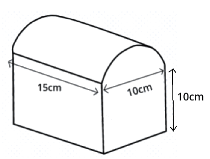
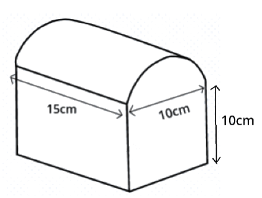

Es el momento de empezar a crear y diseñar nuestra caseta de feria.
Más adelante se unirán todas las casetas para conseguir una maqueta de nuestro recinto ferial.
Nombre de la caseta
La primera decisión a la que debe enfrentarse la Junta Directiva es la elección de un nombre para la caseta.
En nuestra feria todas las casetas tendrán nombres de científicas que destaquen en su campo. Por tanto, deberéis realizar una labor de investigación para encontrar aquella científica con la que os sintáis identificados, ya sea por sus logros científicos o personales.
Normas de la caseta
Todos sabemos que la feria es para disfrutar y pasárselo bien, pero, siempre es necesario establecer unas normas que los socios e invitados a la caseta deben respetar.
Tenéis que redactar un total de 10 normas.

Diseño de la caseta
A lo largo de este proyecto habéis trabajado con tres diseños de casetas diferentes:
 

Deberéis seleccionar uno de ellos.
Este desarrollo de la caseta deberá ajustarse al modelo de caseta seleccionado y a las medidas propuestas.
Decoración de la caseta
Llego el momento de dar color a nuestra caseta. Como en etapas anteriores de este proyecto será necesario seleccionar, bajo la supervisión del decorador de la Junta Directiva, la paleta de colores y la figuras geométricas.

No debéis olvidar que en la portada de la caseta debe figurar el nombre de la caseta.
Cálculo de los metros cuadrados de pintura de cada color.
Tendréis que calcular cuántos metros cuadrados de pintura necesitáis de cada color de vuestra portada.
Documentación de la caseta
Para que la maqueta de nuestra caseta sea incluida en el recinto ferial deberá ir acompañada de un documento en el que se recojan:
- Nombre de la caseta y breve biografía del personaje elegido.
- Medidas de la caseta.
- Normas.
- Diseño de portada.
- Cálculos de cantidad de pintura de cada color.
A continuación encontrarás el modelo del documento que debe acompañar vuestra maqueta.
Accede al recurso Imagen del documento Nuestra caseta de feria:
No olvides imprimirlo, rellenarlo y guardarlo cuando acabes.
Envía este documento a través de Google Classroom. Se habilitará una entrega para ello.


{kind=link}
{kind=link}